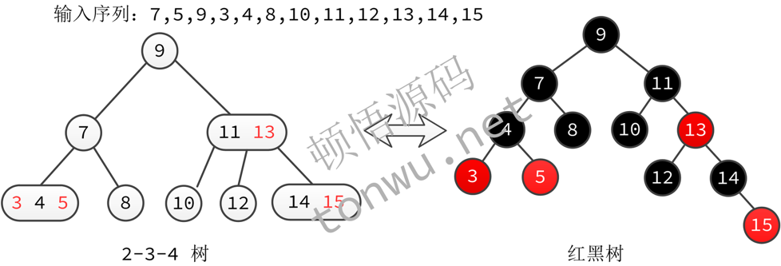

HashMap与红黑树学习总结
2021-06-11
HashMap与红黑树学习总结
HashMap解读（JDK1.8）
带着问题去看代码：
- 里面是怎么存储数据的(使用到的数据结构)?
- 怎么计算哈希值，怎么解决哈希冲突?
- 初始化容量是多少?不断加入数据时，如何进行扩容? 扩容后数据的存储位置是怎么样的
- 查找数据的时间复杂度
- 为什么要用红黑树?这里的红黑树实现有什么特点
HashMap特性
- hash算法效率好，高低位异或
- 数组⻓度是2的n次幂，采用&运算来代替模运算
- 采用modCount来实现failFast
- 为LinkHashMap预留方法实现
- 效率高，用链接来解决哈希冲突。插入数据时链接过长转为红黑树，删除数据时红黑树高度变低了转化为链表。
- 数组扩容时链表会一分为二，红黑树也一样，红黑树甚至会转化为链表
- 线程不安全。
- 源代码里语句很简洁，经常一行代码包括N多赋值与判断，变量命名过 于简单
Hashtable是线程安全的，它是经典的哈希表实现(数组+ 链表)，没有红黑树。同样是哈希表，HashMap跟Hashtable的实现天差地别，可以看出HashMap追求极致的性能，而Hashtable是线程安全的，有加锁操作，性能不会好，所以就采用了最简单的实现
红黑树
红黑树的由来
要完全理解红黑树，必须把下面这些概念都完全搞清楚。
树》二叉树》二叉排序树》自平衡二叉树》2-3树和2-3-4树 (B树)》红黑树
- 树，只有一个父节点，有若干个子节点
- 二叉排序树(Binary Sort Tree)，又称二叉查找树(Binary Search Tree)，又称 二叉搜索树。任意一个节点，它的值比它左孩子的值要大，比它右孩子的值要小
- 平衡二叉树， 又叫AVL树（它的名字是它的发明者们的缩写），是一个二叉搜索树，它的任意一个节点的左右孩子高度差不超过1
B树
- B树是一种平衡的多路搜索树
- 1 个节点可以存储超过 2 个元素(多个元素从小到大排 列)、可以拥有超过 2 个子节点。一个节点存储的元素个 数是它的儿子个数减1
- 拥有二叉搜索树的一些性质
- 绝对平衡:每个节点的所有子树高度一致
- 2-3树和2-3-4树是B树的特例，2-3树是最简单的B树
2-3树、2-3-4树与红黑树
- 2-3树、2-3-4树虽然能保持平衡，但是计算机不好实现
- 红黑树(Red Black Tree) 是一种自平衡二叉查找树。红黑树是近似平衡 的二叉树，左右子树高差有可能大于 1，但是他的平均性能要好于AVL树
- 红黑树对应的理论模型可以是2-3树，也可以是2-3-4树。普遍红黑树的实 现是采用2-3-4树模型
因为2-3（2-3-4）树不好实现，所有把它当做一种模型，采用二叉树的方式（代码较好实现）来实现这个模型。这个就是红黑树。这就是红黑树的由来（当然这是我的猜测）。
红黑树怎么实现这个模型的呢？2-3树一个节点能存两个值，二叉树只能存一个值，所以要把2-3树拆分成两个节点：一个红色，一个黑色。红色代码它可以向上跟它的父节点合并成一个节点，对应的就是2-3树里有两个值元素的节点。这是就是基础。剩下就的就是定各种规则来让红黑树符合2-3树的特征。也就有了红黑树的5个规则。
一张重要的图：2-3-4树与红黑树

红黑树5个特性
- 1) 节点是红色或黑色
- 2) 根节点是黑色
- 3) 空节点(NIL节点，有些文章也叫叶子节点)是黑色的
- 4) 每个红色节点的两个子节点都是黑色。(从每个叶子到根的所 有路径上不能有两个连续的红色节点)
- 5 )从任一节点到其每个叶子的路径上包含的黑色节点数量都相同
- 附加特性:插入的节点设为红色
红黑树5个特性(Why）
- 1)红色在2-3-4树模型中代表要跟父节点合并成一个节点
- 2)根节点没有父节点，没有办法合并，所以根节点不能是红色的
- 3)由于根据特性1任何节点都有颜色，空节点也应该有颜色，被定义为 黑色在代码实现上比较方便(看TreeMap的实现就很明显)。
- 第4和第5特性要结合一起来看，第5点规定从根到叶子节点的路径上只 算黑色节点数，而第4点规定红色节点不能连续，这两点保证了红黑树 的左右两个子树的高度差不会太大。这也是它性能不错的原因。
- 附加特性:在代码实现红黑树的时候，插入的代码设为红色，红色的节 点不影响平衡(第5点特性)，这样可以减少对树的旋转操作
如果你理解了上面的why，就不会再怕记不住它的5条规则了。
节点插入与删除涉及操作
为了保持红黑树的平衡(即符合红黑树的5个特性)，节点 插入或删除需要做一些操作: 1. 变色 2. 左旋转或右旋转，或者将两种旋转组合 3. 涉及到的节点:当前插入的节点，兄弟节点，当前节点的父节点，爷爷节点，叔叔节点
插入总结
先看父，再看叔叔，然后看爷爷。若爷孙三代不在直线， 先父转，再变色, 再爷转。 这一句话概括了几乎所有情况。
删除总结
要想理解红黑树的删除，必须先理解二叉排序树的删除操作。
二叉查找树的结点无非是有两个子结点，有一个子结点和叶子结 点三种，其中有两个子结点的 M 结点的删除逻辑是： 首先寻找 M 结点左子树最大或右子树最小的结点 X 然后把 X 结点的值复制到 M 结点 * 最后删除 X 结点，而这个结点要么是叶子结点，要么就只有一个 孩子
所以，删除任一结点的问题就简化成了: 删除一个最多只有一个孩 子的结点的情况(要么没有孩子，要么只有一个孩子)
红黑树删除节点要领
- 删除红色叶子节点不影响平衡
- 删除黑色节点会影响树的平衡，所以想办法从孩子节点， 或者兄弟节点，或者父节点借一个红色节点过来，并把它 变黑，这样树就恢复平衡了。
- 如果没办法借到红色节点，只能将平衡交给父节点处理，递归向上调整。
红黑树的实现
- HashMap中的红黑树特性:代码复杂，成员变量多，包含 双向链表结构，空间冗余
- TreeMap: 按照2-3-4树模型实现，代码可读性强
- 重复造轮子:手动实现一个红黑树
TreeMap是学习红黑树的最佳源码，没有之一。HashMap里的红黑树相当复杂，在删除一个具有两个孩子节点的地方不太一样，它是直接交换两个节点的，这点开始看得我头疼。
对网上红黑树参考资料吐槽
- 没有把红黑树规则3说清楚(说叶子节点是黑色的很容易让 人误解)
- 大部分没有讲红黑树怎么来的，有什么用
- 没有讲解红黑树的删除操作(删除比插入更复杂)
- 对代码的解读只是简单的代码注释，估计作者也是半懂不 懂的
我写了个《HashMap、红黑树与B树》的PPT给我们团队做技术分享。该PPT已转为PDF传到了GitHub，感兴趣的可以看看。地址在这
终极疑问
- 红黑树最差情况是怎样的?
- 基于2-3树和基于2-3-4树模型实现的红黑树有什么区别?
- HashMap里的红黑树数据结构什么搞那么复杂?(包含双向链表， 空间冗余)
如果你觉得这篇文章有用，请打赏小钱喝杯咖啡^_^

Category: 技术 Tagged: HashMap 红黑树